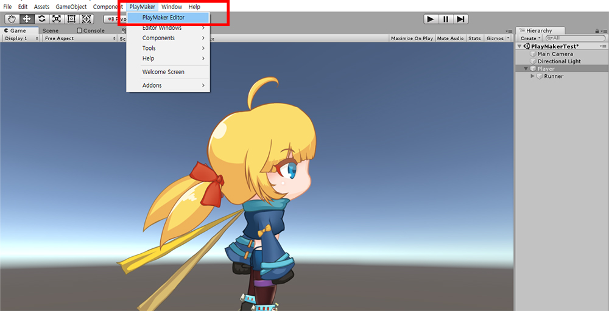

AnyPortrait > Manual > Using PlayMaker™
Using PlayMaker™
1.1.6
PlayMaker™ is a Finite-State Machine (FSM) based Unity Editor asset created by Hutong Games™.
You can quickly build your game using PlayMaker™ without writing scripts.
For those who create games using PlayMaker™, we create and distribute AnyPortrait scripting functions as "custom actions".
This page does not cover how to use PlayMaker™, but briefly describes how to apply custom actions to interact with AnyPortrait and PlayMaker™.
- Hutong Games™ Homepage
- PlayMaker™ Asset Store Page
First, download the "AnyPortrait-PlayMaker Custom Action Package" from the following link and import it into the Unity project.
Latest version (based on v1.1.6)
- Download the AnyPortrait-PlayMaker Custom Action Package (build May 18, 2019)
Previous version
- Download AnyPortrait-PlayMaker Custom Action Package (January 9, 2019 build)
Caution
- This package is not an official package made by Hutong Games™, it is a package made by the RainyRizzle team.
- Optimized for "AnyPortrait v1.1.5" and "PlayMaker™ v1.9.0".
- AnyPortrait and PlayMaker™ must be installed in the project first.

Install (1) AnyPortrait, (2) PlayMaker™, and (3) AnyPortrait-PlayMaker Custom Action Package.
Select the GameObject to which you want to add the FSM of PlayMaker™, then launch PlayMaker Editor.

(1) Right-click in the empty space of PlayMaker Editor.
(2) Click the Add FSM.

FSM was created and "State 1" was added by default.
Here, as an example, let's call the Initialize() function of AnyPortrait as a custom action.
This function is automatically executed in the first frame that is updated, so you do not have to implement it except in special cases.
However, in order to test custom actions in PlayMaker ™, let's call this function directly.
(1) Click State 1.
(2) Select the State tab.
(3) Click the Action Browser button to open the Action list.
(4) Select "Portrait Initialize" action by expanding "AnyPortrait" category among various actions of PlayMaker.
(5) Press the Add Action To State button.

An error may occur if the FSM generated GameObject does not contain apPortrait.
(1) Click the "Use Owner" drop-down menu of the Game Object item, and (2) select "Specify Game Object".

Drag the GameObject containing apPortrait and move it to the "None (Game Object)" slot.
Now the error disappears and apPortrait, which is controlled by PlayMaker ™, is connected.
To test the PlayMaker™ event functions, turn on the Asynchronous Initialization setting.
(1) Check the "Is Async" option to turn on the asynchronous function.
(2) Click the Async Initialize Event item, and then click the New Event menu.

Sets the name of the new event.
I set it to OnAsyncInitialized here.
Name it and press the Create Event button.

An error icon appears because an event has been created but the behavior of the event has not yet been defined in State 1.
(1) Right-click State 1.
(2) Select the Newly added event of Add Transition (OnAsyncInitialized in this example).

(3) Right-click in the empty space of the editor and click Add State to create a new state.
If you click the event and drag it to the newly added state, an arrow will appear and the connection will be made.
Now, when the asynchronous initialization is complete, the OnAsyncInitialized event will be triggered, moving from State 1 to State 2.

In State 2, let's apply one of the various functions of AnyPortrait, "Change the color of the mesh".
(1) Select State 2.
(2) Press the Action Browser button.
(3) In the AnyPortrait category, select the "Portrait Mesh Set Color" action.
(4) Press the Add Action To State button.
(5) "Portrait Mesh Set Color" action has been added to State 2.
I changed the setting of the added "Portrait Mesh Set Color" action as follows.
- Game Object has been changed to be an object (Runner) with apPortrait.
- Color changed to Red.
- Turn off Apply To All and set Transform Name to "Hair", the name of the hair mesh.
- No other settings have been changed.

When you run the game, you see that the hair turns red after the asynchronous initialization is done.
About AnyPortrait-PlayMaker Custom Actions
1. Relationship between Script Functions and Custom Action Package
This custom action package contains most of AnyPortrait's scripting functions.
When you select custom actions in the Action Browser, the description shows which functions are implemented, respectively.
For the script functions of AnyPortrait, please refer to Related page.
2. When using Mecanim
If you use animations with Mecanim, AnyPortrait's animation custom actions will not work.
(Script functions also do not work when using Mecanim.)
Please use the actions of the Animator category.
3. Issues that may arise when using custom actions
If PlayMaker™ or AnyPortrait is updated, there may be a problem or a failure to include new features.
As you build your game, you may need additional custom action features.
Since this custom action package is produced and distributed by RainyRizzle, please contact RainyRizzle homepage.
- Go to the Report page
4. Copyright
AnyPortrait is copyrighted by RainyRizzle.
PlayMaker™ is copyrighted by Hutong Games™.
AnyPortrait-PlayMaker Custom Action Package is copyrighted RainyRizzle and can be modified and redistributed.
However, distribution may be suspended or restricted at the request of Hutong Games™.